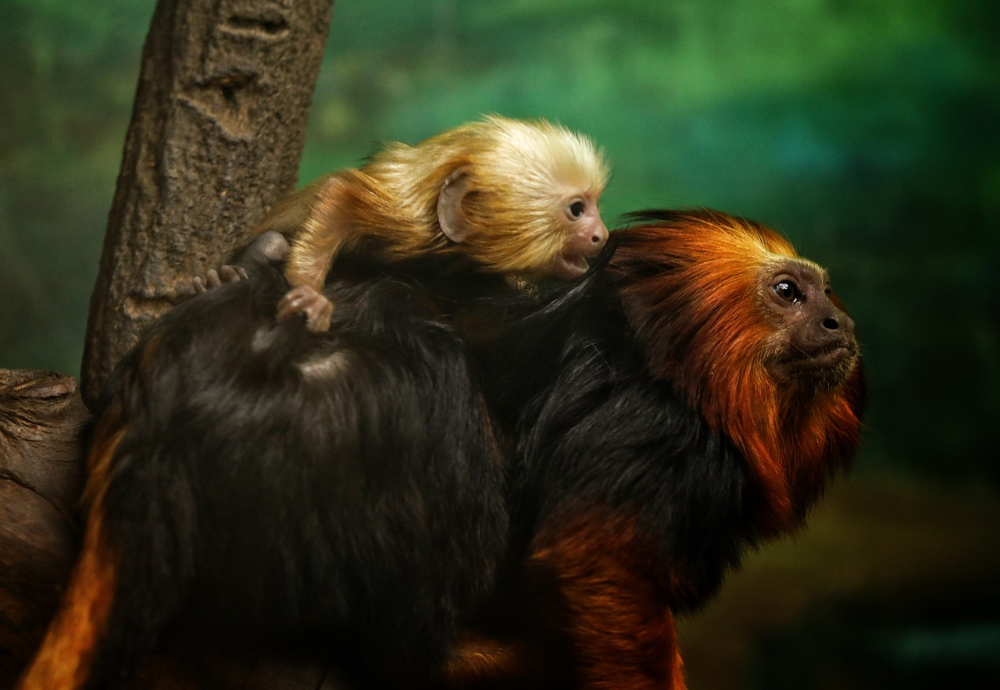

Resources
Golden Lion Tamarin and its baby by Pixabay
Images:
- Torchon, Sandy. Photo at About Page of a Golden Lion Tamarin laying on a tree branch. Pexels.com. Accessed on April 22, 2024.
- Smyth, Daniel. Photo at Main Page of a Golden Lion Tamarin smiling. Pexels.com. Accessed on April 22, 2024.
- Zhang, Will. Photo at Resources Page of a Golden Lion Tamarin and its baby. Pixabay.com. Accessed on April 22, 2024.